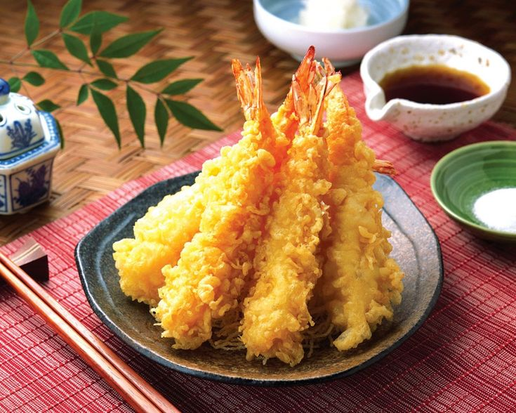

Classic Japanese Tempura

Description
Tempura is a popular Japanese dish consisting of seafood, meat, and vegetables that have been battered and deep-fried. It is famous for its light, crispy texture and is usually served with a savory dipping sauce.
Ingredients
- Fresh prawns or shrimp
- Vegetables like sweet potato, pumpkin, and eggplant
- 1 cup of All-purpose flour or Tempura flour
- 1 egg
- 1 cup of Ice-cold water
- Vegetable oil for deep frying
Steps
- Peel and devein the prawns, then make small incisions on the belly side so they stay straight when frying. Slice the vegetables into thin, bite-sized pieces.
- In a bowl, gently whisk the egg and ice-cold water together, then add the flour. Mix lightly with chopsticks (Do not overmix, lumps are totally fine).
- Heat the vegetable oil in a deep pan to around 170°C to 180°C.
- Dip the prawns and vegetables into the cold batter to coat them lightly, then carefully place them into the hot oil.
- Deep fry for 2 to 3 minutes until the batter turns light golden and crispy, then drain the oil on a paper towel.
Back to home